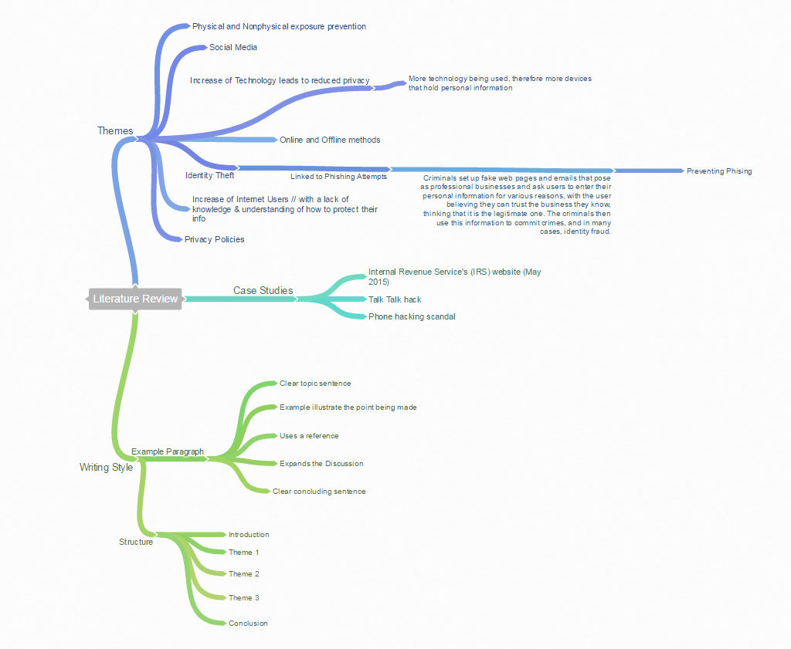
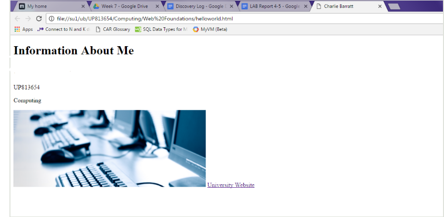
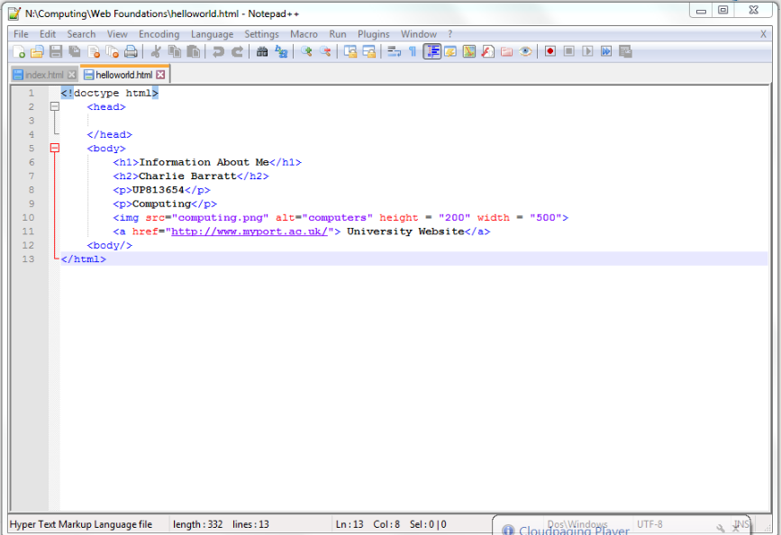
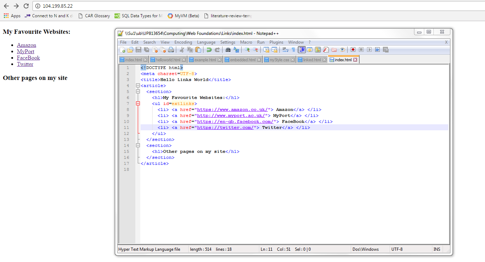
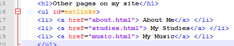
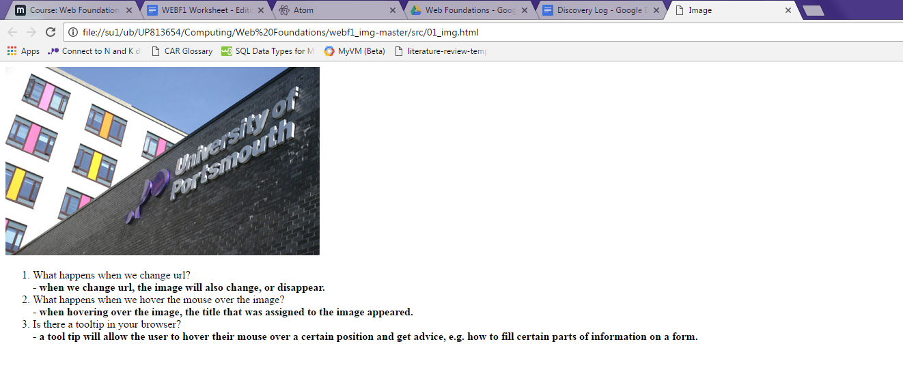
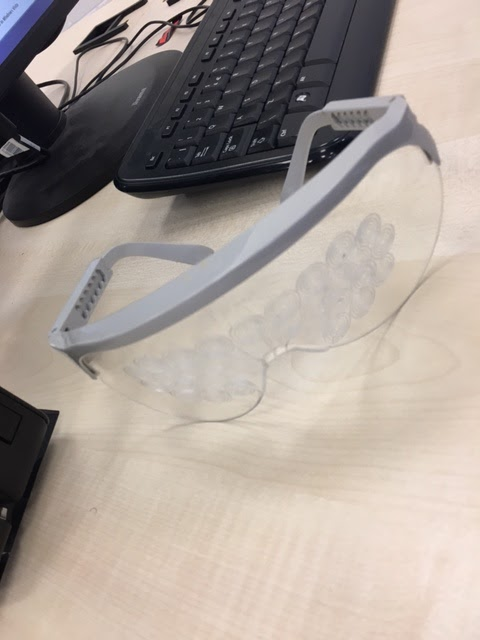
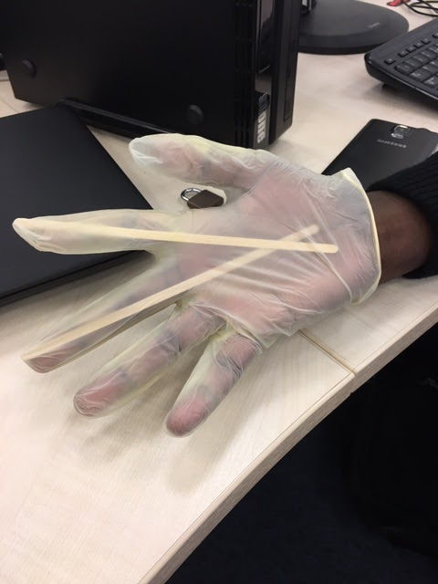

Dicovery Log
This page will present the various aspects of Web Foundations that I believe have been the most useful over the time I have spent over this year in practical sessions. I will use written descriptions and images to display the work that I have done and the most educational aspects of the HTML teaching.
Week 1
Website Awards -
When deciding on the award for the most useful website, I started to think about the websites that i used most frequently at the moment, such as:
I decided that out of all of these options Amazon was the most useful because I find that when I go onto the website with a purpose of looking for a specific product or service, it almost always has the product and has it at a very reasonable price, with quick delivery. The website itself is also very easy to use with simple but effective graphics and a sensible user interface. For the most flawed website I thought about all of the websites that I had used recently which had caused me trouble or had not worked how I wanted them to. My first and final choice was due to it being a large company that I believe could have designed a more exciting website that they update regularly and think about users more often.
Week 2
Web Security -
This task allowed me to realise how much information I am actually generating or causing to be generated on a daily basis. After categorising this information into groups of Secret, Sensitive and Public, I could see which types of information I like to think are secure, and what types of information may not even need to be secure as they are not harmful. The task made me think about how secure my information actually was as I started to think about who could actually see my secret information and who could be using it for marketing purposes etc.
Week 5
Literature Review Writing -
Before: Video games have been in the market for more than 30 years. They are a form of entertainment, but each game is unique. In contrast to watching a movie, video games encourage a player to be an active participant. With the changing technology, video games of today call for full concentration and participation of the player. This has its own advantages and disadvantages.
After: Video games have circulated the market for over 30 years. Video games act as a form of entertainment, with each game having unique aspects. Unlike films, the video game entices users to be an active participant. With improved technology, modern video games demand the user’s whole attention. This has its benefits and drawbacks.
Week 6
Literature Review Mind Map -
This week I created a mind map of the current things that I have found. I will continue to add to this mind map with the more that I find out. The mind map will help me for writing the review.

Week 7
HTML Markup Introduction -
This week I created a Notepad++ document ‘helloworld.html’ and set up my web page using a VM. I then wrote out different code to set out what would be displayed on the web page. The first image below shows the Notepad++ document and the second shows what the web page looked like.


Week 8
CSS Introduction -
This week we were introduced to style using a CSS.
Things that were new to me:
Class Selectors -
.discounted_bargain {
color: red;
}
.damaged_stock {
background: yellow;
}
The p tag with a class e.g. class="damaged_stock discounted_bargain"
ID Selectors -
#special_section {
background: yellow;
}
e.g. id="special_section"
Week 9
Hyperlinks Within HTML -
This week was focussed on links within html. The below links were inputted into my itml code using the "a" tag. I named each tag differently for simplicity e.g. “Facebook” would take them to the facebook website. The below image shows both the notepad++ document and the website.

I then created links to other pages within my own website:

the target="_blank" opened links in a new tab or window.
Week 10
Images in HTML -
This week we used example code and looked at what each different code did to images. There were different questions on each page that we needed to answer and I did so by writing a bullet pointed list for each. (see example below)

Week 11
Introduction to Atom -
This week I was introduced to Atom, a text editor for many different languages. I learnt about many different customisations such as plugins which will make using the editor a lot easier. The plugins used were as follows:
Sytax Highlighting
ctrl+shift+p
Font/font size, soft wrap, line height
Themes
Snippets
HTML preview
Multi cursor
Linter
Highlight Selected
Colour picker
Week 14
A Start on My Website Coursework -
Web pages needed in my coursework:
Home
Discovery Log
Literature Review
About Me/Video
Week 17
Accessability -
This week we looked at websites through the eyes of those who have visual and other impairments. This let us see the importance of making our own websites accessible in order to allow everyone, disabled or not, to be able to use the website. With the glasses, it made it very hard to see the screen clearly. This meant that larger font sizes were more useful for seeing the screen clearly and being able to use it. The gloves with the wooden sticks inside made it a lot harder to use a mouse and keyboard. Ways to counter this would be to use voice operated software so that the user could tell the computer what to do rather than having to use the mouse to interact with something.

